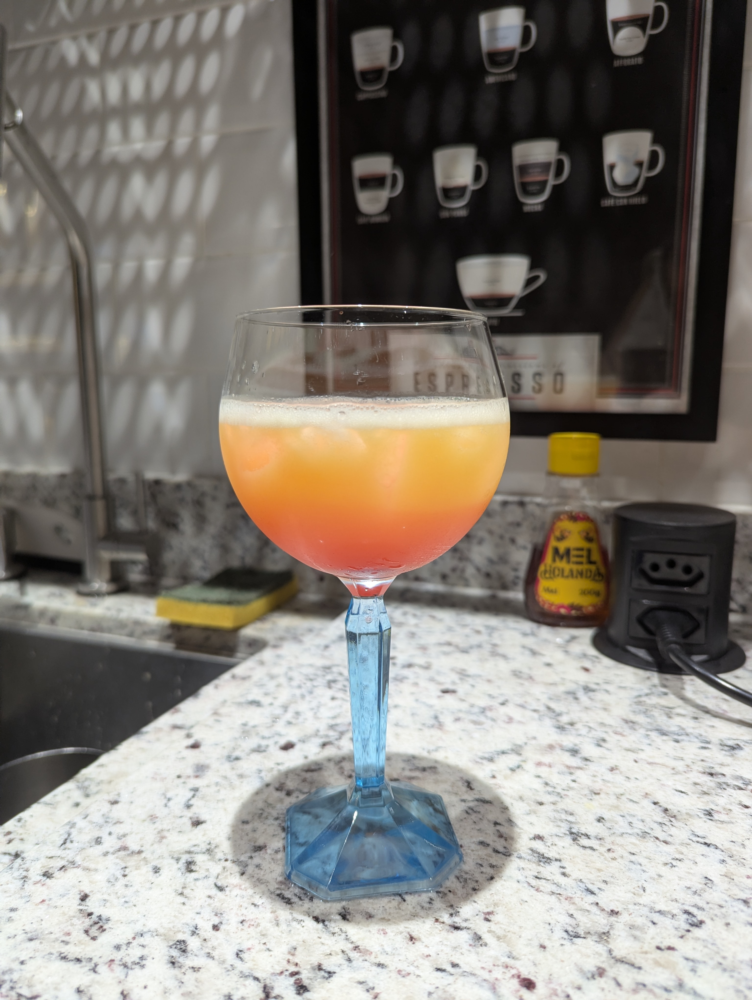

Pink Lemonade
Limão siciliano, grenadine, xarope simples, club soda (90/25/25/150)
Tequila Sunrise
Tequila, suco de laranja, grenadine (30/90/15)
Margarita
Tequila, triple sec, limão (50/20/15)
Tootsie Roll
Suco de laranja, licor de café (2/1)
Orgasm
Licor de café, Baileys, vodka (1/1/1)
Toro Bravo
Licor de café, tequila (1/2)
Black Russian
Licor de café, vodka (2/5)
White Russian
Licor de café, vodka, Leite (1/1/2)
B-52
Licor de café, Baileys, triple sec (1/1/1)
Screwdriver
Vodka, suco de laranja (2/3)
Sex on the Beach
Vodka, licor de pêssego, suco de cranberry, suco de laranja (4/2/4/4)
Kamikaze
Vodka, triple sec, limão (1/1/1)
Lemon Drop Martini
Vodka cítrica, limão siciliano, xarope simples (4/2/1)
Cosmopolitan
Vodka cítrica, Triple sec, limão, suco de cranberry (40/15/15/30)
Berryka
Vodka, suco de cranberry, suco de blueberry (1/1/1)
Daiquiri
Rum, limão, xarope simples (60/30/40)
Cuba Libre
Rum, coca cola, limão (5/12)
Between the Sheets
Rum, Cognac, triple sec, limão siciliano (20/20/20/15)
Caipirinha
Cachaça, limão, açúcar
Cacharita
Cachaça, triple sec, limão siciliano (3/3/1)
Tom Collins
Gin, limão siciliano, xarope simples, club soda (60/25/15/50)
Gin Tônica
Gin, água tônica
Fitzgerald
Gin, limão siciliano, xarope simples, Angostura
Long Island Iced Tea
Vodka, gin, rum, tequila, triple sec, limão siciliano, xarope simples, Coca (15/15/15/15/15/25/30/*)
Adios Motherfucker
Vodka, gin, rum, tequila, curaçau azul, limão, limão siciliano, xarope simples, Sprite
(15/15/15/15/15/15/15/25/*)
French Connection
Cognac, Grand Marnier (3/1)
Lady's Sidecar
Cognac, Triple sec, limão siciliano, suco de laranja (45/30/30/10)
Old Fashioned
Bourbon, xarope simples, Angostura (4/1/*)
